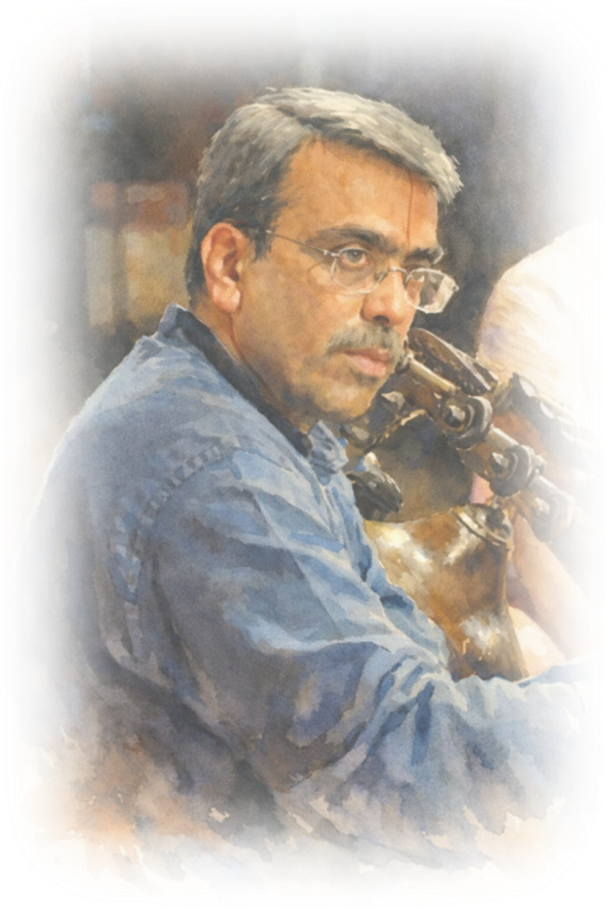

The Vidvān
Son and disciple of Sangeetha Kalanidhi Dr. Mysore V. Doreswamy Iyengar, D. Balakrishna grew in a household where music was absorbed quietly, corrected in silence, and refined without haste. Tradition was not introduced through instruction alone; it was lived as daily presence—through routine, listening, and example—until discipline became instinct and refinement followed naturally.
He stands firmly within the Mysore bāṇi as a natural bearer. Descending from the legacy of Veena Sheshanna, this tradition values clarity over display, repose over urgency, and balance over outward flourish. It is a school where sound is shaped by proportion and restraint, and where form reveals itself without insistence.
In Balakrishna's hands, the veena speaks with quiet assurance. Notes are placed with care; phrases unfold unhurried, without excess or strain. What is heard is steadiness and proportion—an unforced sense of form that holds its shape without contrivance.
The refinement of laya that marks his veena did not arise incidentally. His earliest musical training was in mridangam, where time is learned through discipline rather than display. Years spent within rhythmic structure refined an instinct for balance and anticipation—qualities that later found natural expression in melodic form. When he returned fully to the veena under his father's guidance, rhythm was no longer an accompaniment to melody, but an inner order—present, steady, and unannounced.